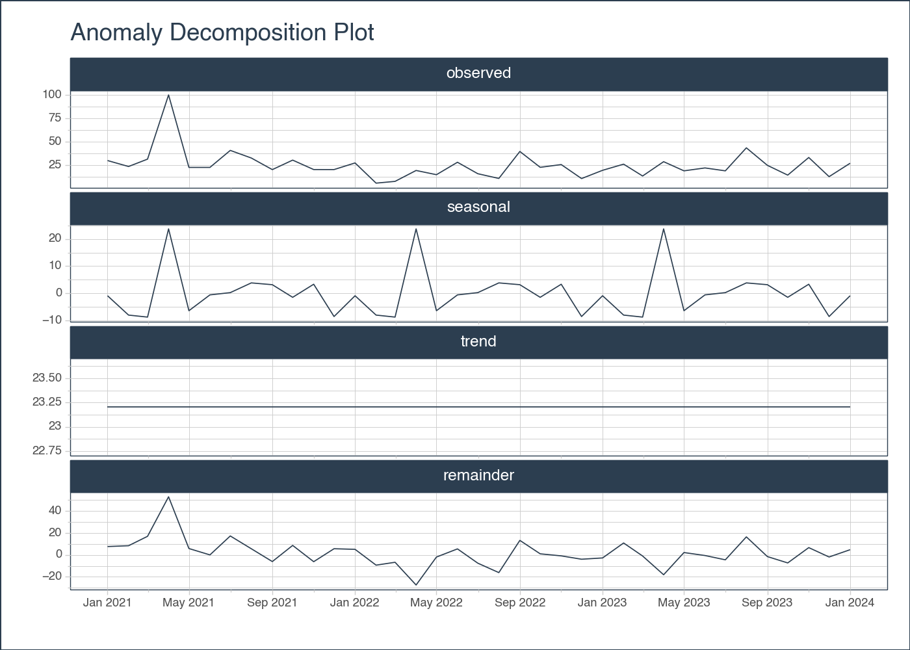

The input data for the plot from anomalize. It can be either a DataFrame or a grouped DataFrame. Polars inputs are supported via the .tk accessor.
required
date_column
str
The name of the column in the data that contains the dates.
required
line_color
str
The color of the line in the plot. It is specified as a hexadecimal color code. The default value is “#2c3e50”.
'#2c3e50'
line_size
Optional[float]
The line_size parameter determines the thickness of the lines in the plot. It is an optional parameter, so if you don’t specify a value, the default line size will be used.
None
line_type
str
The line_type parameter specifies the type of line to be used in the plot. It can take the following values: - “solid” (default): a solid line - “dashed”: a dashed line
'solid'
line_alpha
float
The line_alpha parameter controls the transparency of the lines in the plot. It accepts a float value between 0 and 1, where 0 means completely transparent and 1 means completely opaque.
1.0
y_intercept
Optional[float]
The y_intercept parameter is an optional float value that specifies the y-coordinate of a horizontal line to be plotted on the graph. This line can be used to indicate a specific threshold or reference value. If not specified, no horizontal line will be plotted.
None
y_intercept_color
str
The y_intercept_color parameter is used to specify the color of the y-intercept line on the plot. By default, it is set to "#2c3e50", which is a dark blue color. You can change this parameter to any valid color code or name to change the color of the line.
'#2c3e50'
x_intercept
Optional[str]
The x_intercept parameter is used to specify the value on the x-axis where you want to draw a vertical line. This can be useful for highlighting a specific point or event in the data.
None
x_intercept_color
str
The x_intercept_color parameter is used to specify the color of the vertical line representing the x-intercept on the plot. By default, it is set to “#2c3e50”, which is a dark blue color. You can change this parameter to any valid color code or name to change the color of the line.
'#2c3e50'
title
str
The title of the plot. It is set to “Anomaly Decomposition Plot” by default.
'Anomaly Decomposition Plot'
x_lab
str
The x_lab parameter is used to specify the label for the x-axis of the plot. It is a string that represents the label text.
''
y_lab
str
The y_lab parameter is used to specify the label for the y-axis of the plot. It is a string that represents the label text.
''
x_axis_date_labels
str
The x_axis_date_labels parameter is used to specify the format of the date labels on the x-axis of the plot. It accepts a string representing the format of the date labels. For example, “%b %Y” would display the month abbreviation and year (e.g., Jan 2019).
'%b %Y'
base_size
float
The base_size parameter determines the base font size for the plot. It is used to control the size of the text elements in the plot, such as axis labels, titles, and tick labels. The default value is 11, but you can adjust it to make the text larger or smaller
11
width
Optional[int]
The width parameter determines the width of the plot in pixels. It is an optional parameter, so if you don’t specify a value, the plot will be displayed with the default width.
None
height
Optional[int]
The height parameter determines the height of the plot in pixels. It is an optional parameter, so if you don’t specify a value, the plot will be displayed with a default height.
None
engine
str
The engine parameter specifies the plotting engine to use. It can be set to either “plotly”, “plotnine”, or “matplotlib”.
'plotly'
Returns
Name
Type
Description
A plotly, plotnine, or matplotlib plot.
See Also
anomalize : Function that calculates the anomalies and formats the data for visualization.
plot_anomalies : Function that plots the anomalies.
Examples
# EXAMPLE 1: SINGLE TIME SERIESimport pytimetk as tkimport pandas as pdimport numpy as np# Create a date rangedate_rng = pd.date_range(start='2021-01-01', end='2024-01-01', freq='MS')# Generate some random data with a few outliersnp.random.seed(42)data = np.random.randn(len(date_rng)) *10+25data[3] =100# outlier# Create a DataFramedf = pd.DataFrame(date_rng, columns=['date'])df['value'] = data# Anomalize the dataanomalize_df = tk.anomalize( df, "date", "value", method ="twitter", iqr_alpha =0.10, clean_alpha =0.75, clean ="min_max", verbose =True,)# Visualize the results, plotlyanomalize_df.plot_anomalies_decomp("date", engine ='plotly')
Using seasonal frequency of 12 observations
Using trend frequency of 37 observations
# Visualize the results, plotnineanomalize_df.plot_anomalies_decomp("date", engine ="plotnine")

<Figure Size: (700 x 500)>
# EXAMPLE 2: MULTIPLE TIME SERIESimport pytimetk as tkimport pandas as pddf = tk.load_dataset("walmart_sales_weekly", parse_dates=["Date"])[["id", "Date", "Weekly_Sales"]]anomalize_df = ( df .groupby('id') .anomalize("Date", "Weekly_Sales", period =52, trend =52, threads =1 ))# Visualize the decomposition results, plotly( anomalize_df .groupby("id") .plot_anomalies_decomp( date_column ="Date", line_color ="steelblue", width =1200, height =800, x_axis_date_labels ="%y", engine ='plotly', ))